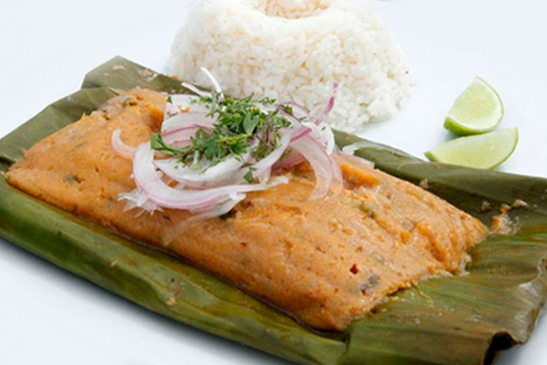

Bollo

Description
The Ecuadorian fish bun is a typical traditional dish from the coast. It is prepared by making a green banana dough, which is put into banana leaves, and filled with a fish conduit.
Ingredients
- 1/2 pound of dolphin fish or yellow fin tuna.
- 4 green plantains ground or processed
- 1/2 pound peanut paste or peanut butter mixed with water
- Salt. Pepper, Cumin
Steps
- Make a refrito with the annatto, tomato, green peppers, onions and garlic, spice it with salt, pepper, Ajinomoto, cumin and broth cube
- After some minutes put the fish cut in pieces and the peanut. Cook for 15 minutes.
- Ground or Process the plantains, cook them in a pot with water and salt.